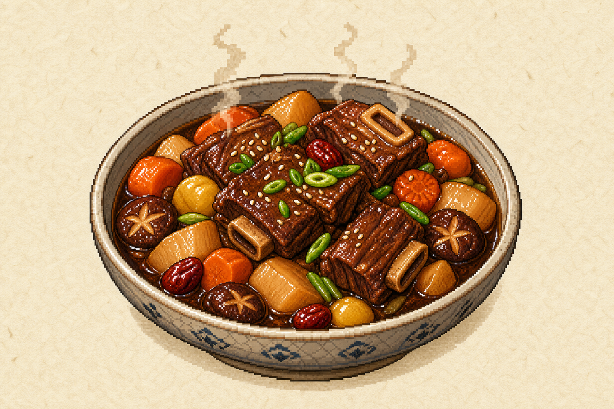
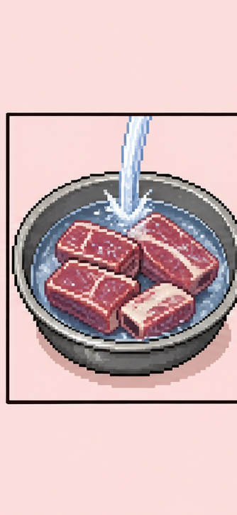
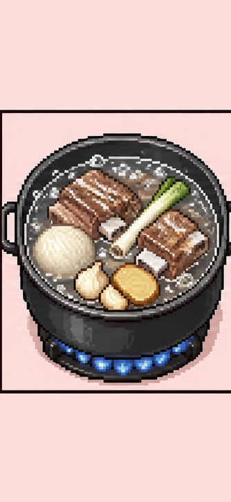
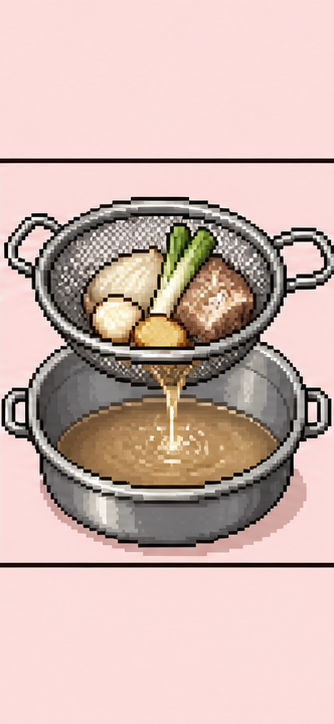
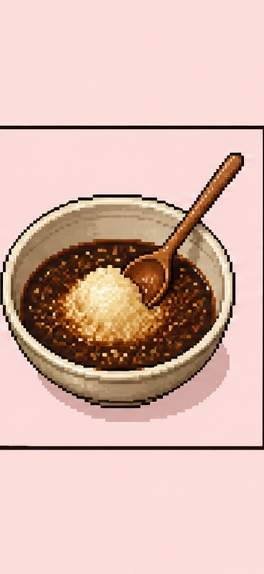
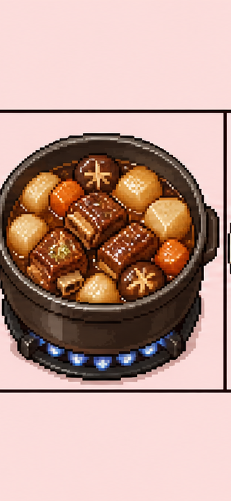
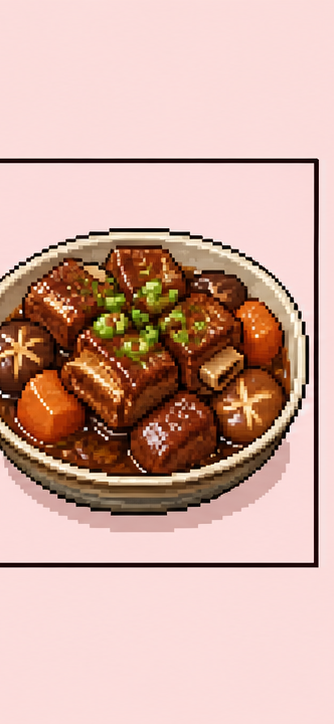

Recipe Archive 2026
Galbijjim: Korean Braised Beef Short Ribs
A tender stovetop braise built around meaty short ribs, soy sauce, Asian pear, garlic, ginger, radish, carrots, and shiitake mushrooms. This page adapts the structure and cooking logic of Hyosun's Korean Bapsang galbijjim recipe.
View original recipe
01
Build the Party
Short ribs and stock
- 3 pounds meaty beef short ribs
- 1/2 onion
- 3 to 4 thin ginger slices
- 5 garlic cloves
- 2 scallion whites
Braising liquid
- 1/2 cup soy sauce
- 2 tablespoons sugar
- 2 tablespoons honey
- 1/4 cup rice wine, matsul, or mirin
- 1/2 cup grated Asian pear
- 1/2 small grated onion
- 1 tablespoon minced garlic
- 1 teaspoon grated ginger
- 1/2 teaspoon black pepper
- 2 tablespoons sesame oil, saved for the end
Vegetables and garnish
- 10 ounces Korean radish, cut in large chunks
- 3 to 4 dried shiitake mushrooms, soaked and quartered
- 1 large carrot, cut in large chunks
- 2 scallion greens
- Optional: chestnuts, jujubes, gingko nuts, or pine nuts
02
Cook the Quest
-

Clean the ribs
Trim extra fat, rinse the ribs, and soak them in cold water for about 30 minutes to draw out excess blood. Drain well.
-

Parboil with aromatics
Boil 5 cups of water with onion, ginger, garlic, and scallion whites. Add the ribs, skim foam, then cook for about 10 minutes.
-

Save the stock
Remove the ribs, strain the stock, and skim off the fat. This stock becomes the base of the braising liquid.
-

Mix the sauce
Combine soy sauce, sugar, honey, rice wine, grated pear, grated onion, garlic, ginger, and black pepper. Hold the sesame oil for the finish.
-

Braise in stages
Return ribs to the pot with sauce and 2 1/2 cups reserved stock. Cover and boil 20 to 30 minutes, then add radish, mushrooms, and carrots for about 20 minutes more.
-

Finish glossy
Add optional garnishes and cook uncovered for about 10 minutes until the sauce thickens. Stir in scallion greens and sesame oil just before serving.
03
Serve and Adjust
No sear required
Korean Bapsang notes that traditional galbijjim parboils the ribs rather than browning them first. Searing is optional if you want a deeper roasted flavor.
Control the sauce
Use medium-low heat and more time for tender meat with more sauce, or cook uncovered at the end to reduce faster and make the ribs shine.
Make it a meal
Serve with steamed rice, kimchi, and crisp vegetable banchan so the sweet-savory braise has something bright beside it.